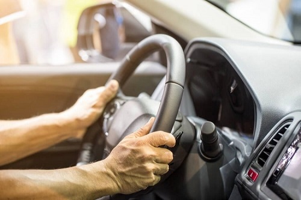

Direção Hidráulica
Diagnóstico e reparo de sistemas de direção hidráulica, com atenção a cada componente do circuito de força.

Oficina especializada em sistemas de direção
Especialistas em sistemas de direção hidráulica, elétrica e eletro-hidráulica. Diagnóstico preciso, serviço transparente e segurança para você voltar a dirigir com confiança.
Referência em direção elétrica e hidráulica
Posicionamento
A Lutron Direções trabalha exclusivamente com sistemas de direção. Antes de qualquer serviço, identificamos com precisão a origem do problema — para que cada intervenção seja justificada, explicada e executada com segurança.
Diagnosticar primeiro. Explicar com clareza. Executar com precisão.
Especialidades
Atuação exclusiva em direção veicular, com soluções definitivas para folgas, ruídos e perda de precisão no volante.
Diagnóstico e reparo de sistemas de direção hidráulica, com atenção a cada componente do circuito de força.
Diagnóstico e manutenção de sistemas de direção elétrica, unindo leitura eletrônica e experiência técnica.
Diagnóstico e reparo de sistemas eletro-hidráulicos, que combinam força hidráulica e controle eletrônico.
Por que confiar
Você entende o problema antes de autorizar qualquer serviço.
Diagnóstico e reparo com rigor técnico e acabamento premium, sem suposições.
Clareza sobre o que é necessário — e o que não é.
A direção é o sistema que mais depende de confiabilidade.
Uma relação construída para durar além de um único reparo.
Como trabalhamos
Entendemos o comportamento do veículo e identificamos os sintomas apresentados.
Investigamos a causa do problema com precisão, antes de qualquer intervenção.
Você entende o problema e o serviço necessário antes da execução.
Executamos o serviço com foco em segurança, precisão e confiabilidade.
Missão
Garantir a máxima segurança, controle e conforto na condução de veículos, especializando-se na excelência em sistemas de direção.
Atuamos com transparência e honestidade para que cada motorista guie sua jornada com total tranquilidade e confiança.
Visão
Ser a oficina mecânica de referência absoluta e autoridade em sistemas de direção hidráulica, elétrica e eletro-hidráulica da nossa região.
Reconhecida pela precisão técnica, lealdade com o cliente e integridade em cada diagnóstico.
Valores
Diagnósticos claros e transparentes.
Serviço justo, seguro e responsável.
Uma relação de parceria e confiança com o cliente.
Valorizamos cada pessoa que confia seu veículo ao nosso trabalho.
Manifesto
Quando a direção perde precisão, o motorista perde confiança.
Na Lutron Direções, o nosso trabalho vai além de reparar um sistema: buscamos devolver ao motorista a segurança, o controle e a tranquilidade necessários para seguir sua jornada.
Porque dirigir bem começa por confiar no que está entre suas mãos.
Conte com a Lutron Direções para avaliar o sistema de direção do seu veículo com transparência, precisão e responsabilidade.